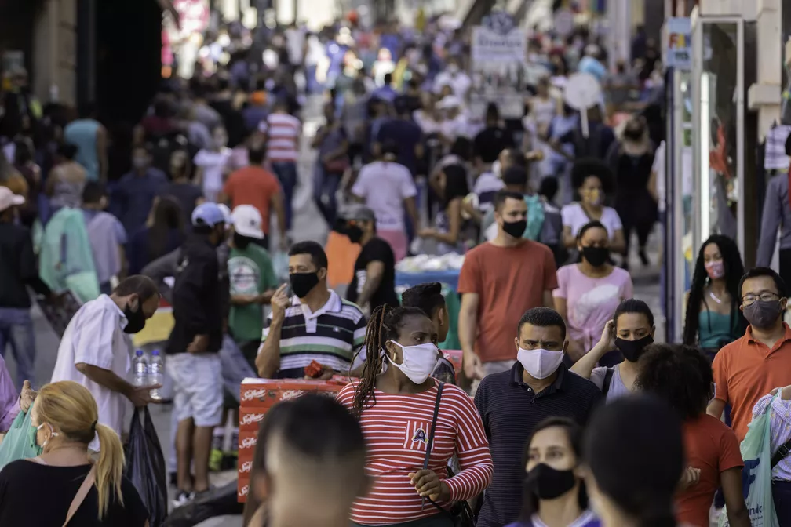

LIMITAÇÃO DO
FLUXO DE PESSOAS
super lotação em centro comerciais,
construções,condições climáticas
etc...Imprevistos que acontecem quando
planejamos sair para locais
movimentados,mas e se não fossem mais Imprevistos?
Já pensou em saber como está a
movimentação do local aonde você pretende ir?
Saiba mais sobre o nosso aplicativa que irá te
ajudar nisso.

O People Flow soluciona esse problema, como?
Ao se cadastrar no app o usuário tem acesso à atividade das pessoas em pontos específicos
da cidade, geralmente os lugares mais movimentados como o bairro do Jacintinho ou Mercado.
Sendo assim fica da escolha do usuário ir ou não a esses lugares. Quanto mais pessoas
logadas no app mais precisa será a quantidade de pessoas no local, uma vez que o app usará
a localização dos usuários para fazer o controle dos dados.